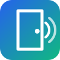

Snippen Doorman
BLE WiFi-oppsett
Frakoblet
📡 Bluetooth Tilkobling
Trykk på den fysiske knappen på Raspberry Pi (eller start den på nytt) for å aktivere oppsettmodus i 10 minutter, og trykk koble til.
🎉 Gateway Tilkoblet!
Gatewayen er nå tilkoblet det lokale nettverket. Du kan nå åpne det fullverdige kontrollpanelet for å konfigurere dørlåser, nøkler og Booking API: